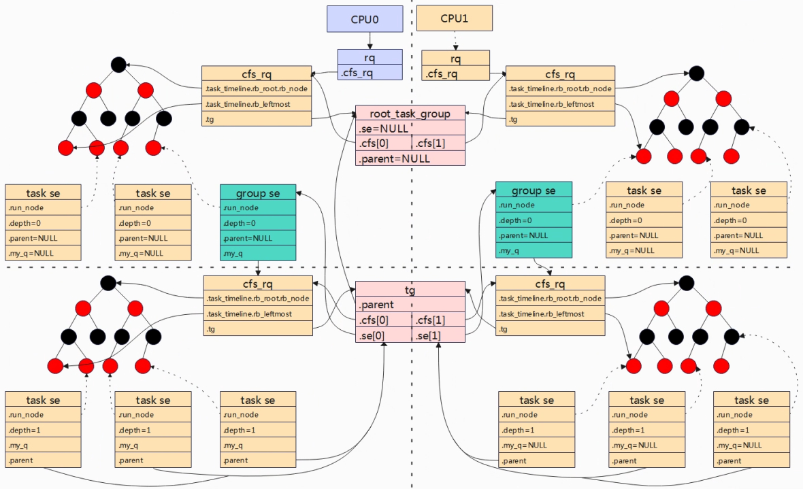

Linux系统都是支持多用户登录，如果一个Linux系统两个用户存在不同的数量的进程，假设A用户有10个进程，B用户有20个进程，如果系统对这30个进程进行平分CPU，实际上是不公平的，因此引入了组调度的概念，即A用户对CPU的占用应该跟B用对CPU的占用各自为50%，A/B用户下的进程再根据得到占用进行划分。系统中有cfs组调度和rt组调度，本小节主要以cfs调度为主。 如上图，组A的进程分别分配到了CPU0和CPU1上运行，在CPU0和CPU1上的进程各自组合成一个调度实体G1，两个组在各自的CPU上互不影响。以CPU0为例，G1和P1在一颗红黑树中进行调度，G1获得的“调度资源”，将需要“平分”给其组员（组进程）。
基本原理
使用struct task_group来描述任务组，下面是struct task_group的数据结构，后续的组用tg简称。
kernel/sched/sched.h
struct task_group {
struct cgroup_subsys_state css;
struct sched_entity **se; //动态数组，对应每个cpu上调度实体
struct cfs_rq **cfs_rq;//动态数组，对应每个cpu上调度实体下的进程集合
unsigned long shares; //当前进程组权重
atomic_long_t load_avg;
struct sched_rt_entity **rt_se;
struct rt_rq **rt_rq;
struct rt_bandwidth rt_bandwidth;
struct list_head list; 全局所有任务组加入到全局链表task_groups上。
struct task_group *parent; 指向当前调度组的父任务组
struct list_head siblings; 将当前tg挂载到父tg的children链表上。
struct list_head children; 挂着当前tg组所有孩子的tg。
struct cfs_bandwidth cfs_bandwidth; 用于带宽控制
}
所有的任务组会以树结构来组织，在Linux系统中定义了一个全局的根节点struct task_group root_task_group;同时定义一个全局链表LIST_HEAD(task_groups)将所有任务组串在一个链表上。

如上图，G1~G4形成一颗树，根为root_task_group，并且G1~G4串联在链表上task_groups上。

上图是task_group与调度相关数据结构之间的关系。task_group有自己的调度实体struct sched_entity，与task_struct中的调度实体区别是，这里是一个指针数组，指针数组的大小为当前cpu核的个数，因为一组中有多个进程，但是这些进程可以分配到不同的cpu核上，因此每个数组se表示一个cpu核上的调度实体，也就是说当分配一个组时，就会为每个CPU都会维护一个se。同理task_group中cfs_rq红黑树用于记录组任务中在每个cpu下的进程。  上图是一个任务组的示例，任务组tg下进程分配到CPU0和CPU1上运行。全局root_task_group，其se和parent都会NULL，cfs分别指向CPU0和CPU1的cfs队列。因为任务组tg下的进程分布在两个cpu上，因此CPU0和CPU1各自对应一个任务组调度实体group se，tg中的se[0]和se[1]分别指向cpu0和cpu1上组调度实体，组调度实体group和进程调度实体task se处于第一级的平行关系，也就是调度公平。Group se中my_q和tg中cfs指向了任务组进程的队列，该队列处于调度的第二级。所以当组调度实体再与平行关系的进程获得调度机会后，将平均（再按照CFS算法）分给其组内进程进行调度。
{kind=link}
创建组调度

权重

gse->load.weigh = tg->weight * grq->load.weight / Sum grq->load.weight
- tg->weight：任务组默认权重值，等于tg->shares，默认是1024。
- grq->load.weight：单cpu下任务组中所有进程的权重之和。
- Sum grq->load.weight：任务组中所有进程任务之后，包含分配在各cpu上的。 示例：cpu0
gse->load.weight = 1024 * (1024 + 2048) / (1024 + 2048 + 3072) = 3145728/6144 = 512
上面是理想化的公式模型，但是实际情况Sum grq->load.weight因为需要涉及访问各个CPU上的grq，会导致锁竞争的代价，因此根据上面公式做了近似计算最终得到如下：
gse->load.weight = tg-weight * grq->load.weight /
(tg->load_avg - grq->avg.load_avg + max (grq->load.weight,grq->avg.load_avg))
具体演化结果可以参考kernel/sched/fair.c中calc_group_shares函数的注释，这里就不详细阐述了，calc_group_shares通过上面的公式近似计算各个gse分得的权重。
static long calc_group_shares(struct cfs_rq *cfs_rq)
{
long tg_weight, tg_shares, load, shares;
struct task_group *tg = cfs_rq->tg;
tg_shares = READ_ONCE(tg->shares);
load = max(scale_load_down(cfs_rq->load.weight), cfs_rq->avg.load_avg);
tg_weight = atomic_long_read(&tg->load_avg);
/* Ensure tg_weight >= load */
tg_weight -= cfs_rq->tg_load_avg_contrib;
tg_weight += load;
shares = (tg_shares * load);
if (tg_weight)
shares /= tg_weight;
return clamp_t(long, shares, MIN_SHARES, tg_shares);
}
从公式可以看出，gse的权重与任务组进程个数以及cpu.shares有关系。cpu.shares则是用户节点/sys/fs/cgroup/cpu.shares可控制。

带宽管理
考虑这样的一个场景，假设一个用户只支付了0.5个CPU的费用，那么正常情况下就只能给其0.5个CPU的时间。因此为了限制用户进程对CPU资源占用情况，引入带宽控制，带宽控制是基于分组调度来实现，对一个任务组的运行带宽做限制，也就是在一个周期内，允许一个任务组最多执行多长时间，当任务组运行完了自己的时间，将会被限制不允许运行，即使没有任何任务运行，也需要等到下一个周期。
{kind=link}
带宽限制以任务组为单位进行限制，为方便描述原理，上图是只有一个任务组，任务组中的进程被分配到CPU0和CPU1上运行。在task_group数据结构中，cfs_bandwidth成员用于全局描述当前任务组带宽限制，表示在一个period周期内，任务组可使用的时间为quota，这里的时间是任务组中进程的和，当quota使用完后，在整个周期内将会被限制运行，称为throttle操作。 在任务组tg（便于简化假设用户组中只有一个任务组，暂且也称用户组）中有cpu数量的就绪队列，对应上图的cfs_rq0和cfs_rq1，这两个就绪队列所属于任务组。就绪队列中runtime_remaining为当前队列中所有进程可运行的时间，进程运行时就会消耗runtime_remaining，当runtime_remaining被消耗小于0时，可以向全局时间池tg->cfs_b->runtime（表示任务组剩余可使用的时间）中申请，每次申请的值为sysctl_sched_cfs_bandwidth_slice（可节点配置，默认是5ms），当tg->cfs_b->runtime将被耗尽时，不能满足cfs_rqx->runtime_remaining时，cfs_rqx就绪队列将会被移除（对应的gse在上一级中被移除）。

（1）cfs_bandwidth - period: 定时器周期时间 - quota:在周期内任务组可使用的时间 - runtime:剩余时间，quota+runtime = period - period_timer:周期性定时器，定时到达后重置剩余限额runtime为quota。 - slack_timer: - throttled_cfs_rq:所有被throttle的cfs_rq挂入到次链表，用于后期unthrottle cfs_rq操作。 （2）cfs_rq中关于带宽管理描述 - runtime_enabled：该就绪队列是否开启带宽限制。 - runtime_remaining: cfs_rq会从全局时间池申请时间片，当剩余时间片小于0，需要重新申请。 - throttled:判定cfs_rq是否被throttled。 - throttled_list: 被throttled_list的cfs_rq会被挂入到cfs_bandwidth->throttled_cfs_rq链表。
任务组剩余时间

在task_group中，在每个CPU上都有一个cfs_rq红黑树，cfs_rq结构体中有一个runtime_remining用于描述当前组能够运行的时间合计，任务组中的每个任务运行都会消耗掉runtime_remining，当runtime_remaining被消耗完时会从全局时间池申请，如果全局池中的时间也用完了，那么就需要让出调度，cfs_rq就会被throttle。 runtime_remaining的更新在update_curr函数中进行。如上图所示cfs_rq->runtime_remaining-=delta_exec，每个进程将会对runtime_remainning进行消耗，当runtime_remaining不足时，调用assign_cfs_rq_runtime进行申请。
static int __assign_cfs_rq_runtime(struct cfs_bandwidth *cfs_b,
struct cfs_rq *cfs_rq, u64 target_runtime)
{
u64 min_amount, amount = 0;
lockdep_assert_held(&cfs_b->lock);
/* note: this is a positive sum as runtime_remaining <= 0 */
min_amount = target_runtime - cfs_rq->runtime_remaining;
//计算每次向全局时间池要申请的时间片大小，target_runtim由sched_cfs_bandwidth_slice()计算得来，默认是5ms，可以通过sched_cfs_bandwidth_slice_us节点进行修改。
if (cfs_b->quota == RUNTIME_INF) //不限制带宽，remainig可以一直申请到时间片。
amount = min_amount;
else {
start_cfs_bandwidth(cfs_b); //如果没有启动cfs_b->period_timer就启动
//如果全局时间池时间还有剩余，则分配给当前就绪队列。
if (cfs_b->runtime > 0) {
amount = min(cfs_b->runtime, min_amount);
cfs_b->runtime -= amount; //时间被瓜分出去
cfs_b->idle = 0;
}
}
//更新当前队列的剩余时间
cfs_rq->runtime_remaining += amount;
//如果没有从全局池申请到时间片，则返回0，那么当前进程将会被throttle，让出调度。
return cfs_rq->runtime_remaining > 0;
}
任务组一个全局时间池，剩余全局池的时间存储在cfs_b->runtime中，其所属的就绪队列cfs_rq会从全局池中申请可使用的时间，每次申请时间大小为sched_cfs_bandwidth_slice_us（可通过节点来进行修改默认是5ms）。 cfs_rq->runtime_remaining和cfs_b->runtime的区别是？runtime为任务组的全局剩余时间，一个任务组可能包含多个cfs_rq（包含各CPU，以及子任务组等），所以runtime大于runtime_remaining。cfs_rq->runtime_remaining小于等于0时就绪队列cfs_rq的调度实体将会被移除，下次调度将不再被选择到。
限制任务组运行
static void __account_cfs_rq_runtime(struct cfs_rq *cfs_rq, u64 delta_exec)
{
/* dock delta_exec before expiring quota (as it could span periods) */
cfs_rq->runtime_remaining -= delta_exec;
if (likely(cfs_rq->runtime_remaining > 0))
return;
if (cfs_rq->throttled)
return;
/*
* if we're unable to extend our runtime we resched so that the active
* hierarchy can be throttled
*/
if (!assign_cfs_rq_runtime(cfs_rq) && likely(cfs_rq->curr))
resched_curr(rq_of(cfs_rq));
}
当assign_cfs_rq_runtime从全局时间池中申请不到时间，就会调用resched_curr触发调度。在以下场景下，会检测是否进行限流，如果限制则调用throttle_cfs_rq将当前调度实体（组调度实体）移除就绪队列。
{kind=link}
static bool throttle_cfs_rq(struct cfs_rq *cfs_rq)
{
struct rq *rq = rq_of(cfs_rq);
struct cfs_bandwidth *cfs_b = tg_cfs_bandwidth(cfs_rq->tg);
struct sched_entity *se;
long task_delta, idle_task_delta, dequeue = 1;
raw_spin_lock(&cfs_b->lock);
//计算当前cfs_rq剩余可用的时间。
if (__assign_cfs_rq_runtime(cfs_b, cfs_rq, 1)) {
dequeue = 0;
} else {
//如果剩余可用时间为0，则将当前cfs_rq添加到throttled_cfs_rq。
list_add_tail_rcu(&cfs_rq->throttled_list,
&cfs_b->throttled_cfs_rq);
}
raw_spin_unlock(&cfs_b->lock);
//还有剩余可使用时间，直接返回
if (!dequeue)
return false; /* Throttle no longer required. */
//获取当前cfs_rq对应的调度实体
se = cfs_rq->tg->se[cpu_of(rq_of(cfs_rq))];
/* freeze hierarchy runnable averages while throttled */
rcu_read_lock();
//遍历cfs_rq子任务组，并累加cfs_rq->throttle_count++
walk_tg_tree_from(cfs_rq->tg, tg_throttle_down, tg_nop, (void *)rq);
rcu_read_unlock();
task_delta = cfs_rq->h_nr_running;
idle_task_delta = cfs_rq->idle_h_nr_running;
for_each_sched_entity(se) {
struct cfs_rq *qcfs_rq = cfs_rq_of(se);
/* throttled entity or throttle-on-deactivate */
if (!se->on_rq)
goto done;
//将当前调度实体出队，移除就绪队列
dequeue_entity(qcfs_rq, se, DEQUEUE_SLEEP);
if (cfs_rq_is_idle(group_cfs_rq(se)))
idle_task_delta = cfs_rq->h_nr_running;
qcfs_rq->h_nr_running -= task_delta;
qcfs_rq->idle_h_nr_running -= idle_task_delta;
//如果当前调度实体的就绪队列只有一个，那么父调度实体也要被出队。
//如果调度实体就绪队列不只是一个，那么直接退出，也就只循环一次。
if (qcfs_rq->load.weight) {
/* Avoid re-evaluating load for this entity: */
se = parent_entity(se);
break;
}
}
//设置被限流的标志
cfs_rq->throttled = 1;
return true;
}
判断一个cfs_rq是否被限流的标志，就是看cfs_rq-reamaining是否还能申请到时间。
period_time和slack_timer定时器
struct cfs_bandwith结构体中，有两个定时器：period_timer和slack_timer。period_timer计时到达时表示一个period到期（对应cfs_bandwith中的period周期），就会重新更新quota以及解除之前限制的任务。slack_timer则要解决的是全局时间池时间的浪费问题，假设一个cfs_rq从全局池申请了5ms时间片，而cfs_rq中只有一个进程，该进程运行1ms就睡眠一直睡眠了，而整个cfs_rq对应的gse会被dequeue，那么剩余的4ms需要归部分还给全局时间池，当全局池时间累计大于5ms，那么就启动slack_timer将此前ttrottle cfs_rq取消限流。
void init_cfs_bandwidth(struct cfs_bandwidth *cfs_b)
{
raw_spin_lock_init(&cfs_b->lock);
cfs_b->runtime = 0;
cfs_b->quota = RUNTIME_INF; //默认=-1，无限制
cfs_b->period = ns_to_ktime(default_cfs_period()); //初始化period，默认100ms
cfs_b->burst = 0;
INIT_LIST_HEAD(&cfs_b->throttled_cfs_rq); //初始化链表，被限制的cfs将挂到该链表上
hrtimer_init(&cfs_b->period_timer, CLOCK_MONOTONIC, HRTIMER_MODE_ABS_PINNED);
cfs_b->period_timer.function = sched_cfs_period_timer;
//初始化period_timer定时器
hrtimer_init(&cfs_b->slack_timer, CLOCK_MONOTONIC, HRTIMER_MODE_REL);
cfs_b->slack_timer.function = sched_cfs_slack_timer;
//初始化slack_timer定时器
cfs_b->slack_started = false;
}
{kind=link}
init_cfs_bandwidth函数将初始化两个定时器，period_timer在进程入队/更新runtime时间的时候进行启动，启动period_timer后就每个period时间后重新将quota更新给任务组的runtime并将已经节流的cfs_rq重新加入队列。slack_timer是在调度实体出队的时候触发，当调度实体被移除就绪队列时，就检测cfs_rq上剩余可运行时间，如果剩余时间不足1ms就不用归还给全局时间池，否则归还cfs_rq->runtime_remaining - min_cfs_rq_runtime（默认1ms）的时间给全局时间池，归还给全局时间池后需要判断是否可以启动定时器将此前被节流的cfs_rq调度实体重新加入到就绪队列中，判断的条件是全局池中剩余的时间要大于cfs_b->runtime > sched_cfs_bandwidth_slice()（默认要大于5ms），因为cfs_rq每次申请的时间片是sched_cfs_bandwidth_slice()。
static void __return_cfs_rq_runtime(struct cfs_rq *cfs_rq)
{
struct cfs_bandwidth *cfs_b = tg_cfs_bandwidth(cfs_rq->tg);
s64 slack_runtime = cfs_rq->runtime_remaining - min_cfs_rq_runtime;
//计算归还给系统的时间，预留一点时间给就绪队列
//如果没有剩余时间，直接返回。
if (slack_runtime <= 0)
return;
raw_spin_lock(&cfs_b->lock);
if (cfs_b->quota != RUNTIME_INF) {
cfs_b->runtime += slack_runtime;
//全局池的时间要大于cfs_rq每次申请的时间片并且有就绪队列被节流
if (cfs_b->runtime > sched_cfs_bandwidth_slice() &&
!list_empty(&cfs_b->throttled_cfs_rq))
start_cfs_slack_bandwidth(cfs_b);
}
raw_spin_unlock(&cfs_b->lock);
//重新更新当前就绪队列的时间片
cfs_rq->runtime_remaining -= slack_runtime;
}
小结
（1）cfs_b->runtime: 任务组的进程在一个period周期能可运行的时间为runtime，该值在每个周期到来时会被更新为quota值。 （2）cfs_rq->runtime_remaining:任务组所属的就绪队列cfs_rq，就绪队列中的进程运行后将会消耗runtime_remaining，调度周期会调用update_curr函数更新当前进程执行时间了多少时间即对应runtime_remaining就会被减少，当runtime_remaining不足时就会向全局cfs_b->runtime申请，如果申请不到当前的cfs_rq就绪队列上所以进程就会被节流无法再运行。 （3）节流：就绪队列无法申请到运行时间就会被节流并设置可被抢占（resched_curr），在进程切换的时候会检查被节流的调度实体，并将当前调度实体从就绪队列中移除。 （4）解除节流：下一个周期到来或者另外一个就绪队列让出了时间（slack_timer），节流的队列将会被重新加入到就绪队列得以运行。
将两个进程放到任务组，调整quota_us观察cpu占用率情况。
mkdir -p cgroup/cpu/
mount -t cgroup -ocpu cpu /cgroup/cpu/
cd /cgroup/cpu/
mkdir A
cd A
echo 1293 > cgroup.procs
echo 1294 > cgroup.procs
cat cpu.cfs_period_us
echo 10000 > cpu.cfs_quota_us
将两个进程绑定到一个核上运行，调整nice观察cpu占用率。
# 将1309和1221都绑定到0核上
taskset -cp 0 1309
taskset -cp 0 1221
renice -1 1221 #动态调整1221进程的优先级
将两个进程放到任务组，并运行多个进程，调整cpu.shares，观察整体任务组分配到的cpu占用率，把相同业务的进程放到一个组，然后调整优先级。
mkdir -p cgroup/cpu/
mount -t cgroup -ocpu cpu /cgroup/cpu/
cd /cgroup/cpu/
mkdir A
cd A
echo 1293 > cgroup.procs
echo 1294 > cgroup.procs
echo 1277 > cpu.shares